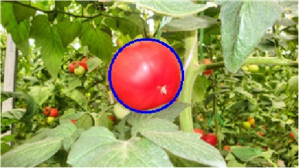
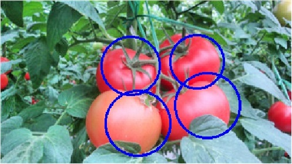
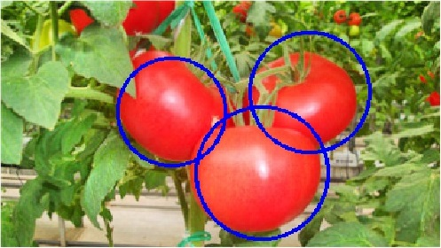
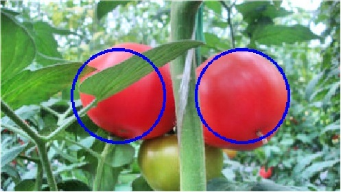
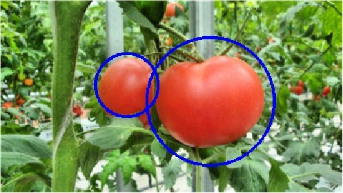
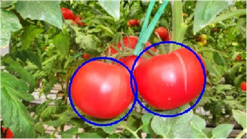
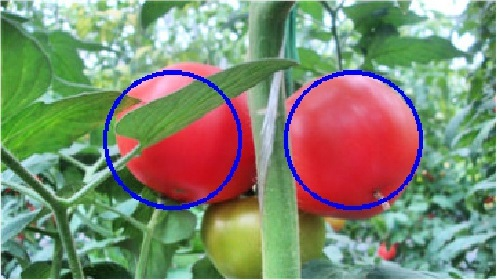
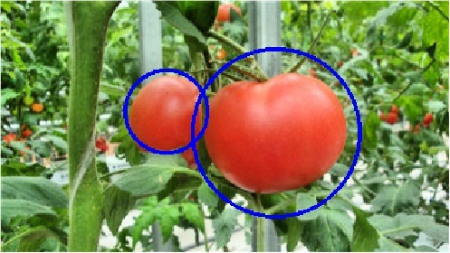
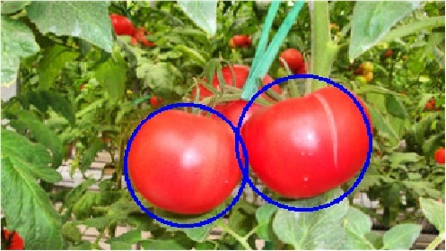

  
Some examples: including separate, overlapped and occluded cases.
  
Some examples: including separate, overlapped and occluded cases.
Introduction
The tomatoes dataset was collected by Guoxu Liu and Shuyi Mao. It consists of 247 360×202 colour images. There are 100 images for training, 72 images for validation and 75 images for test. If you have any questions , please contact pandalgx@gmail.com.
Download
If you're going to use this dataset, please cite our paper at the bottom of this page.
Version Size
Tomatoes dataset 9.87 MB
Tomatoes dataset 9.87 MB